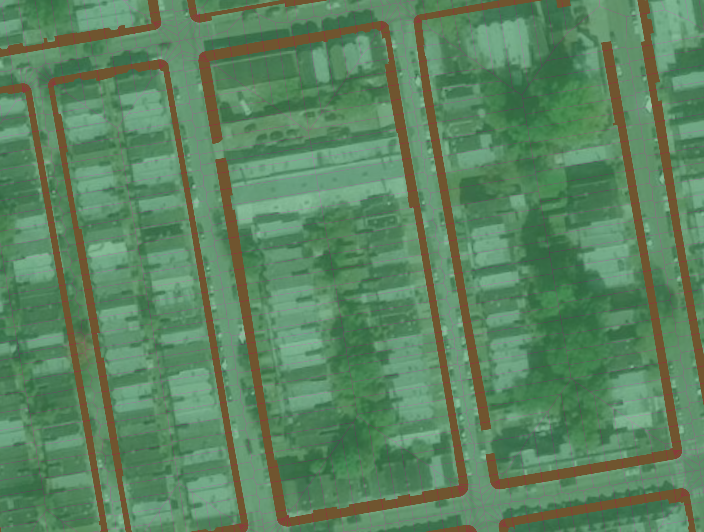
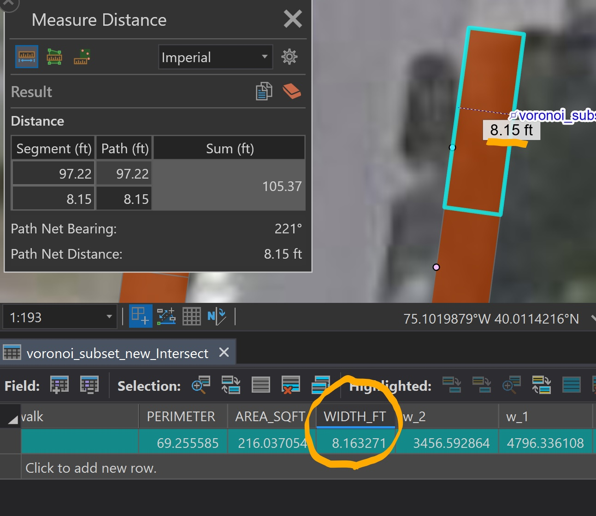
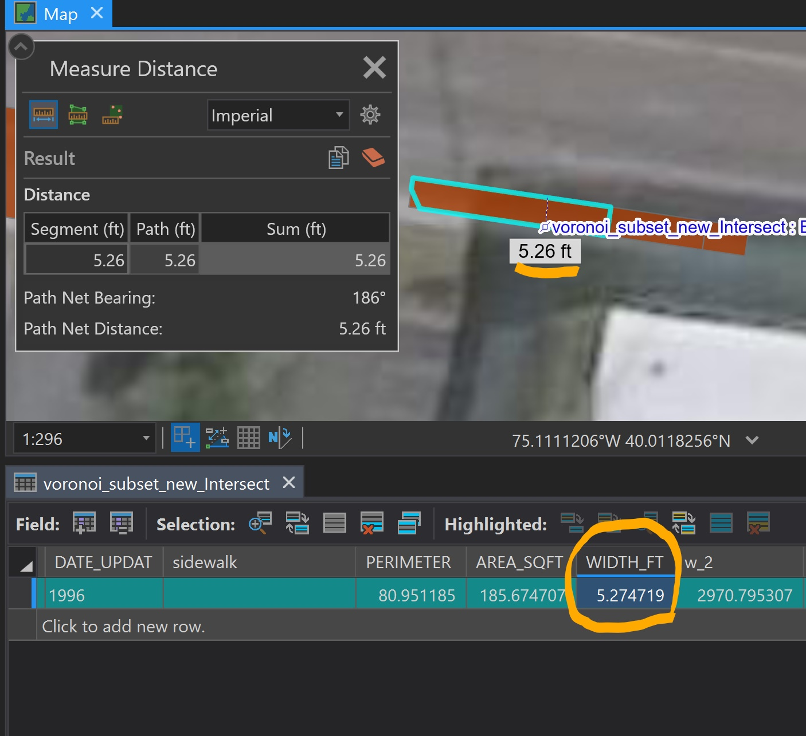
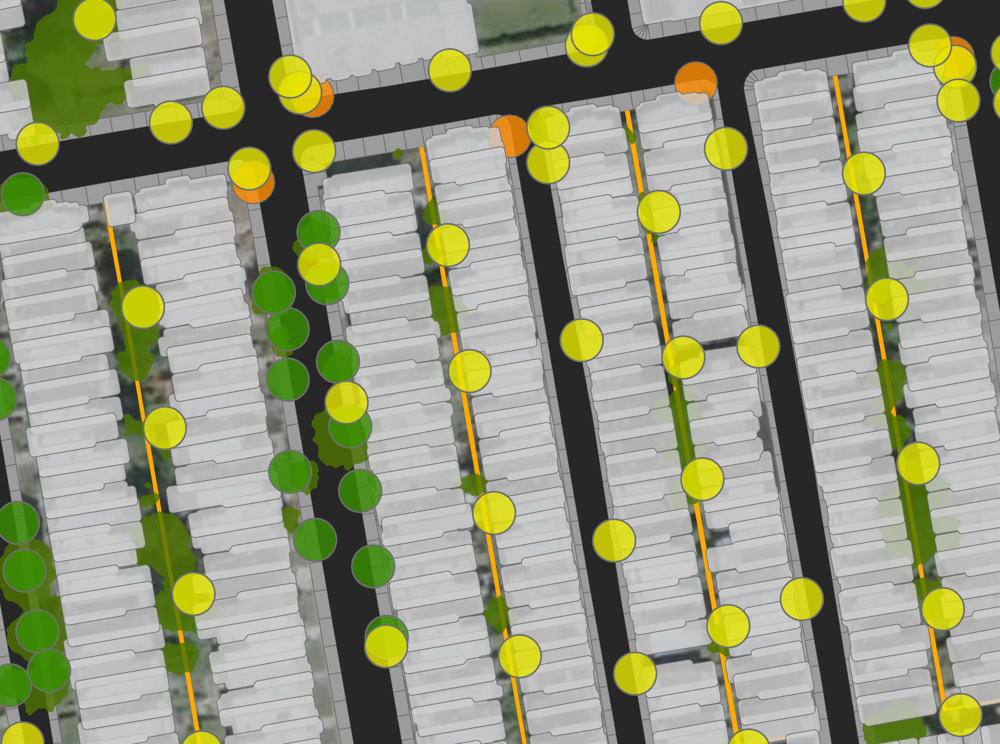

Estimating Sidewalk Width for Street Tree Plantings
GIS Analysis & Coursework
For a dense city with a large percentage of impervious surface such as Philadelphia, there are numerous barriers to being able to plant new street trees. Street trees require significant space above the canopy as to not grow into overhanging wires; plenty of space away from fire hydrants, front doors, street signs, and other urban infrastructure; and a large enough sidewalk width for accessibility.
As part of my Philly Tree Plan Opportunity analysis, I quantified the public space next to the street that each Philadelphia street (including both sides from the street’s center) has for additional street tree plantings. Some of the exclusionary layers, or infrastructure that determine whether an area next to the street is unable to have additional street trees planted, include existing tree canopy (2018), existing street trees (buffered), fire hydrants (buffered), existing Green Stormwater Infrastructure (GSIs), street poles (buffered), and sidewalks that are too narrow (<3ft as to include the most sidewalk as possible).
See the full list of exclusionary layers here.
Philadelphia has a relatively accurate impervious surfaces layer (2015) from which sidewalks can be extracted, but there is no simple way using this layer to break up the sidewalks into individual polygons that accurately represent each side of the street’s sidewalk width.

Dissolve & Extract Vertices
For example, one single sidewalk feature can wrap around the entire block, so any formula that could estimate the block or feature’s average sidewalk width would be inaccurate, as each side of the block may have entirely different widths. To isolate each different part of the sidewalk and more accurately estimate width for each part, first I dissolved the sidewalks layer and calculated only the exterior vertices (those facing the street) of the sidewalks; otherwise, the splits would be far too messy.


Create Voronoi Polygons
With this vertices layer, I was able to create Voronoi polygons for the sidewalks; this essentially splits up the sidewalks based on the sidewalk features’ geometries so that a more accurate width could be measured.

The dissolved sidewalk layer was then intersected with the Voronoi layer to get a split sidewalk layer. For each sidewalk feature, perimeter and area were calculated and used to determine an approximate width using this formula (suggested by StackExchange user whuber here):
w = (P - Sqrt(P^2 - 16A))/4

Results & Uses
The results are typically very close to the layer’s width when using the ArcGIS Pro measuring tool. The accuracy was also tested in the field, and the results were typically only wrong by less than a foot.

Sidewalk segments with widths of less than 3 feet were automatically excluded. Because of the nature of the Voronoi polygon splitting method, many of the sidewalk corners (facing a street intersection) were excluded because of how small their widths are, but this was intentional due to street trees not being able to be planted within a certain distance of street corners.

With more narrow sidewalk segments excluded and the other exclusionary layers erased from the output, much of the sidewalk area throughout the city was classified as unplantable (the red indicates plantable space).

Using the Summarize Within tool in ArcGIS Pro, the total area of plantable sidewalk space was divided by the total available area on either side of the street’s centerline to determine the percentage of plantable space per street. The result (the Planting Opportunity layer) can be found on this map.